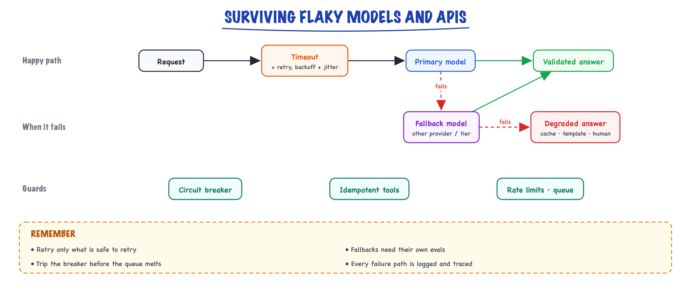
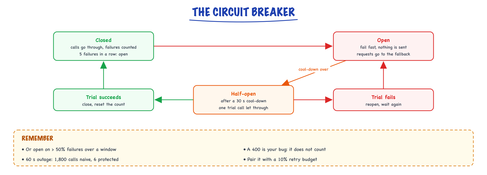

Reliability engineering // Production & evals
Surviving flaky models and APIs: retries, fallbacks, timeouts, idempotency.
01 — At a glance

Bound every call with a timeout, retry with backoff, fall back to another model, and degrade gracefully when all else fails.
02 — New words
| Word | Meaning |
|---|---|
| Availability | The fraction of requests (or time) for which a service works. 99.5% means 1 in 200 requests fails. |
| Transient vs persistent failure | A transient failure goes away if you try again shortly (a blip, a rate limit); a persistent one does not (an outage, a bad request). |
| Exponential backoff | Waiting longer after each failed attempt, typically doubling the wait each time. |
| Jitter | Randomness added to the wait, so many clients that failed together do not retry together. |
| Retry amplification | Retries at several layers multiplying, so one user request becomes many upstream calls during an incident. |
| Retry budget | A cap on retries as a fraction of normal traffic, so retries can never multiply load beyond a set factor. |
| Deadline | The absolute time by which the whole request must finish. Every inner timeout is cut to fit what remains of it. |
| Hedged request | A backup copy of a slow request sent to another replica; whichever answers first wins. |
| Fallback | A different model, provider or region used when the primary fails. |
| Circuit breaker | A switch that stops calling a dependency after repeated failures and fails fast, then tests it again after a cool-down. |
| Rate limit (RPM / TPM) | A provider's cap on requests or tokens per minute for your account. Exceeding it returns HTTP 429. |
| Idempotency | The property that doing an operation twice has the same effect as doing it once. Required before retrying anything with side effects. |
The lesson
03 — The question
A hosted model API is a remote dependency that is slower, more expensive and less predictable than most: it rate-limits you, it has slow tails measured in tens of seconds, it has regional incidents, and even when it answers, the answer can be malformed. An LLM feature that calls it several times per request inherits all of that. Reliability engineering is the set of techniques that turn a flaky dependency into a dependable feature, and the arithmetic that says which technique helps when.
What interviewers ask:
- How do failures add up across a multi-step pipeline or agent?
- How should retries work, and how can they make an outage worse?
- How do you set timeouts for calls that legitimately take 50 seconds?
- When do fallbacks, circuit breakers and hedging help, and what do they cost?
Running example. A contract-review feature: a user uploads a contract and gets a structured risk summary. Each request makes three model calls in sequence: classify the document type, extract clauses as JSON, and write the summary. Peak traffic is 10 requests per second; each call averages about 3,000 tokens. The provider, under normal conditions, answers 99.5% of calls successfully (an illustrative figure), with failures split between rate limits, server errors and timeouts, plus rare regional outages. The target: 99.9% of requests produce a correct summary within 60 seconds.
04 — Step 1: failures compound
If each call succeeds with probability \(a\) and the calls fail independently, a request that needs \(n\) calls in series succeeds with probability \(a^n\):
\[ 0.995^3 \approx 0.985 \qquad 0.995^{10} \approx 0.951 \]Our three-call pipeline fails 1.5% of the time with no protection: fifteen times the 0.1% target. An agent that makes ten calls fails about 5% of the time, before counting any mistakes the model makes. Multi-step designs multiply unreliability, which is one reason to use as few model calls per request as the task allows.
The independence assumption matters and is often wrong. Transient failures (a dropped connection, a busy replica) are roughly independent between calls. Outages are not: if the provider's region is down, every call fails together. The two kinds need different tools. Retries fix independent failures; fallbacks and degradation handle correlated ones.
05 — Step 2: retry the right failures
A retry turns a per-call failure probability \(f\) into roughly \(f^2\), if failures are independent. With \(f = 0.005\), one retry gives a per-call failure of \(2.5 \times 10^{-5}\), and the three-call pipeline succeeds 99.993% of the time. That one change takes the feature from 98.5% to well past the target, which is why retries are the first tool.
But only some failures are worth retrying:
- Retry: timeouts, connection errors, server errors (500, 502, 503), overload responses, and rate limits (429), the last after the wait the provider asks for in its
retry-afterheader if it sends one. - Do not retry: malformed requests (400), authentication errors (401, 403), prompts over the context limit, content-policy refusals. These fail identically every time; retrying wastes the time budget and the quota.
- Retry only if safe: any call with side effects (a tool that sends an email or issues a refund) must be idempotent first: the retry must carry an idempotency key so the second attempt cannot do the action twice. Plain model calls have no side effects except cost, so they are safe to repeat.
06 — Step 3: back off, with jitter
When a provider has a blip, every client fails at nearly the same moment. If they all retry after the same delay, they all arrive again at the same moment, and a provider that was struggling gets the whole load in one burst. Exponential backoff (wait 0.5 s, then 1 s, then 2 s...) spaces attempts out per client but does nothing about clients being synchronised with each other.
Jitter fixes the synchronisation. With "full jitter", each retry waits a random time between zero and the exponential cap, so a crowd that failed together spreads out across the whole window.
A simulation makes the difference concrete. A thousand requests fail at once; the provider can serve 150 requests per 100 ms and rejects the rest, which retry with a base delay of 0.5 s:
| Strategy | Time until all 1,000 served | Total attempts |
|---|---|---|
| Exponential backoff, no jitter | 31.6 s | 3,850 |
| Exponential backoff, full jitter | 2.1 s | 1,974 |
Without jitter, each wave arrives as one block, 150 are served, and the other 850, 700, 550... all wait together for the next, ever longer, delay. With jitter, retries trickle in at roughly the rate the provider can absorb. Same backoff, same provider, fifteen times faster recovery and half the load. Jitter is not a refinement; it is the part that makes backoff work at scale.
07 — Step 4: retries can cause the outage
Retries add load exactly when the dependency can least afford it. Two mechanisms make that dangerous:
- Amplification across layers. If the HTTP client library retries 3 times, your service retries 3 times, and the caller of your service retries 3 times, one user action becomes up to \(3 \times 3 \times 3 = 27\) upstream calls during an incident. Our peak of 30 model calls per second becomes up to 810 calls per second aimed at a provider that is already failing, and the rate limiter guarantees most of them fail too.
- Retry storms keep an outage going. A provider recovering from overload is pushed straight back into it by the retry backlog. Systems can stay down for this reason alone.
The defences are structural. Retry at one layer (usually the one that knows the deadline and whether the operation is idempotent) and make the others pass errors through. And cap retries with a retry budget: retries may add at most, say, 10% on top of first attempts across the whole client. Under normal conditions that is far more than needed (failures are 0.5%); during an outage it caps the extra load at 1.1 times normal instead of 3 or 27 times.
08 — Step 5: timeouts and deadlines for slow, streaming calls
Every call needs a timeout: without one, a hung connection holds a request (and a worker, and memory) forever. LLM calls make choosing it awkward, because legitimate latency varies hugely. Our extraction call can produce 2,000 output tokens at about 25 ms each: 50 seconds of perfectly healthy generation. A total timeout of 30 s kills every long extraction; a timeout of 120 s waits two minutes for a connection that died at second three.
The fix is to time out on progress, not on total duration, which streaming makes possible:
- A time-to-first-token timeout, set a little above the observed p99 TTFT (say 5 s if p99 is 3 s). A call that has not started in that time is very likely stuck in a queue or dead.
- An idle timeout between tokens (say 10 s): a healthy stream produces a token every few tens of milliseconds, so a ten-second silence means a stall.
- A deadline for the whole request (60 s here), propagated down: each attempt's timeout is the smaller of its own cap and the time remaining before the deadline. Otherwise the first attempt can consume the entire budget and the "three attempts" in the retry policy never happen.
The deadline also tells you how many retries are realistic. In a 60 s interactive request whose three sequential calls include an extraction that can take 50 s, there is no room to retry a slow extraction at all; the plan must rely on fast failure detection and fallbacks instead. Background jobs with a ten-minute deadline can afford several patient retries. Retry policy is a function of the deadline, not a constant.
09 — Step 6: hedging the slow tail
Some calls do not fail; they are just very slow, because they landed on an overloaded replica or a stalled connection. Retries do not help, since the call has not failed yet. A hedged request sends a second copy after a delay and takes whichever answers first.
A simulation with illustrative numbers: most calls take about 2 s, but 2% stall for around 30 s. Hedging after 4 s (roughly the p95):
| p50 | p95 | p99 | Extra requests | |
|---|---|---|---|---|
| No hedging | 2.0 s | 3.9 s | 30.0 s | 0% |
| Hedge at 4 s | 2.0 s | 3.9 s | 6.1 s | 4.6% |
The p99 falls from 30 s to 6 s for about 5% more calls. The rule of thumb: hedge at around the p95, so only the slowest few percent get a backup. Two conditions apply. The call must be safe to duplicate (no side effects), and the duplicate costs tokens, so hedging a 3,000-token call adds about 5% to spend. It pays off where tail latency matters more than a few percent of cost, which for interactive features it usually does.
11 — Step 8: circuit breakers
During an outage, every request still tries the failing primary first, waits for its timeout, maybe retries, and only then falls back. Each request pays seconds of delay, and the failing provider keeps receiving traffic. A circuit breaker stops this by remembering recent failures:
- Closed (normal): calls go through; failures are counted.
- Open: after, say, 5 consecutive failures (or a failure rate above 50% over a window), calls fail immediately without being sent, so requests go straight to the fallback.
- Half-open: after a cool-down (say 30 s), one trial call is let through. Success closes the breaker; failure reopens it.

Five failures in a row open the breaker, so calls fail fast and go to the fallback; after a 30-second cool-down one trial call decides whether it closes again or reopens.
The simulation in the code below runs 10 requests per second for 200 seconds against a provider with a 60-second outage. Without protection, three attempts per request send 1,800 calls into the outage. With a breaker and a retry budget, 6 calls reach the provider during the outage; the other requests fail fast (and in a real system go to the fallback), and service resumes within one cool-down of recovery. One detail: a 400 Bad Request should not count as a failure for the breaker, since it means your request is wrong, not that the provider is down.
12 — Step 9: rate limits are capacity, not errors
Hosted providers cap each account at some number of requests per minute (RPM) and tokens per minute (TPM). A 429 is not a fault; it is the provider telling you that your demand exceeds your allocation. Treat it as a capacity-planning input:
\[ \text{TPM needed} = \text{requests/s} \times \text{calls per request} \times \text{tokens per call} \times 60 \]For the contract feature at peak: \(10 \times 3 \times 3{,}000 \times 60 = 5.4\) million tokens per minute. If the account's limit is 4 million TPM, retries cannot help: 26% of the demand has no capacity. The options are capacity options: raise the quota, spread across several deployments or regions, reduce tokens per call (shorter prompts, smaller documents per call), or queue and smooth the bursts.
Inside your system, a client-side rate limiter (a token bucket refilled at your quota rate) is better than discovering the limit through 429s: it keeps you just below the limit, lets you give priority to interactive traffic over background jobs, and turns overload into a short, controlled queue instead of a burst of failures. Batch work should go through a separate quota or a batch API so it cannot starve interactive users.
13 — Step 10: a wrong answer is a failure too
A call that returns HTTP 200 with JSON missing a required field has failed as surely as a timeout, and must be handled like one. For the extraction step:
- Validate every structured output against its schema and business rules (dates parse, amounts are positive, clause references exist in the document).
- Repair once on failure: re-ask with the validation error included. If 3% of outputs fail validation and a repair fixes 80% of those, the residual failure rate is 0.6%, at a cost of 3% more calls. Cap repairs at one or two, and only if the deadline allows.
- Prevent where possible: constrained decoding or a provider's strict structured-output mode makes schema violations nearly impossible (see Structured output), leaving only the business-rule checks.
- Check the finish reason: output cut off at the token limit is invalid by construction.
Validation failures also feed observability: a rising repair rate is often the first sign that a model update or prompt change has shifted behaviour (see Observability).
14 — A worked plan for the contract feature
- Baseline: three calls at 99.5% gives 98.5%. Target is 99.9%.
- Retries at the orchestrator only, for retryable errors, full jitter, under a 10% retry budget, each attempt cut to the remaining deadline. Independent failures drop to about 0.0075% per request.
- Timeouts: 5 s to first token, 10 s idle between tokens, 60 s request deadline.
- Hedging for the classify and summary calls at their p95; not for extraction, whose length makes duplicates expensive.
- Fallback to a second provider with its own tested prompt variant and a quota sized for full peak, behind a circuit breaker on the primary.
- Capacity: 5.4M TPM at peak against a 4M quota, so request an increase or split traffic across two deployments; client-side token bucket with interactive traffic first.
- Validation: schema plus business checks on extraction, one repair attempt, strict structured output where supported.
- Degradation: if all providers fail, accept the upload, queue the job and notify when done.
- Measure: success rate within deadline per step, retry and fallback rates, breaker state changes, repair rate; alert on the SLO burn rate.
15 — In code: jitter, hedging and a breaker you can test
The thundering-herd simulation from Step 3.
import random def recover(strategy, clients=1000, capacity=150, bucket=0.1, base=0.5, seed=0): """All clients fail at t=0. The provider serves `capacity` requests per 100 ms bucket and rejects the rest, which retry. Returns (seconds until everyone succeeded, total attempts).""" rng = random.Random(seed) pending = [(0.0, 0)] * clients # (time of next try, attempt number) attempts, t_done = 0, 0.0 while pending: pending.sort() b = int(pending[0][0] / bucket) # the earliest bucket with any arrivals now = [p for p in pending if int(p[0] / bucket) == b] later = [p for p in pending if int(p[0] / bucket) != b] attempts += len(now) served, rejected = now[:capacity], now[capacity:] t_done = (b + 1) * bucket retry = [] for t, n in rejected: cap = base * 2 ** n delay = cap if strategy == "exponential" else rng.uniform(0, cap) # full jitter retry.append((t + delay, n + 1)) pending = later + retry return t_done, attempts for s in ("exponential", "full jitter"): t, a = recover(s) print(f"{s:12s}: everyone served after {t:5.1f} s, {a} attempts for 1000 requests")
The hedging simulation from Step 6.
import random rng = random.Random(3) def call_latency(): """Illustrative: mostly ~2 s, but 2% of calls stall on a slow replica for ~30 s.""" return rng.uniform(25, 35) if rng.random() < 0.02 else rng.lognormvariate(0.7, 0.35) def pct(xs, q): return sorted(xs)[int(q * len(xs))] N, HEDGE_AT = 100_000, 4.0 # send a backup request if no answer by 4 s plain = [call_latency() for _ in range(N)] hedged, extra = [], 0 for _ in range(N): first = call_latency() if first <= HEDGE_AT: hedged.append(first) else: extra += 1 hedged.append(min(first, HEDGE_AT + call_latency())) for name, xs in (("no hedging", plain), ("hedge at 4 s", hedged)): print(f"{name:13s} p50 {pct(xs, .5):4.1f} s p95 {pct(xs, .95):4.1f} s p99 {pct(xs, .99):4.1f} s") print(f"extra requests sent: {extra / N:.1%}")
A circuit breaker and retry budget, tested against a 60-second outage. The naive client sends three attempts per request into the outage; the protected one fails fast.
import random class Breaker: """Open after `threshold` consecutive failures; let one trial call through after `cooldown` s.""" def __init__(self, threshold=5, cooldown=30.0): self.threshold, self.cooldown, self.fails, self.opened_at = threshold, cooldown, 0, None def allow(self, now): return self.opened_at is None or now - self.opened_at >= self.cooldown # closed, or half-open def record(self, ok, now): self.fails = 0 if ok else self.fails + 1 if ok: self.opened_at = None elif self.fails >= self.threshold: self.opened_at = now class RetryBudget: """Retries may add at most `ratio` extra calls on top of first attempts.""" def __init__(self, ratio=0.1): self.ratio, self.first, self.retries = ratio, 0, 0 def can_retry(self): return self.retries < self.ratio * self.first def call(provider, breaker, budget, now, max_attempts=3): budget.first += 1 for attempt in range(max_attempts): if attempt and not budget.can_retry(): return "gave up (retry budget)" if not breaker.allow(now): return "fast fail (breaker open)" budget.retries += attempt > 0 ok = provider(now) breaker.record(ok, now) if ok: return "ok" return "failed" def run(protected): rng = random.Random(0) calls = {"all": 0, "outage": 0} def provider(t): # 0.5% transient errors; outage at 100-160 s calls["all"] += 1 calls["outage"] += 100 <= t < 160 return rng.random() > (1.0 if 100 <= t < 160 else 0.005) breaker = Breaker() if protected else Breaker(threshold=10**9) # huge threshold = no breaker budget = RetryBudget() if protected else RetryBudget(ratio=10**9) # huge ratio = unlimited retries results = {} for i in range(2000): # 10 requests per second for 200 s r = call(provider, breaker, budget, now=i / 10) results[r] = results.get(r, 0) + 1 return results, calls for protected in (False, True): results, calls = run(protected) print("protected" if protected else "naive ", results, f"upstream calls during outage: {calls['outage']}") assert results["ok"] >= 1390 # everything outside the outage still succeeds
Output: the naive client gets 1,400 successes and 600 failures and sends 1,800 calls into the outage; the protected client gets 1,399 successes, 600 fast failures (which a real system would route to the fallback) and sends 6. In production, use a maintained library for the mechanics (for example tenacity for retries with jitter, or your HTTP client's retry policy), and keep the budget, deadline and breaker decisions in your own code where you can see them.
More detail
16 — Reliability: surviving flaky models & APIs
LLM APIs rate-limit, time out, and occasionally return garbage. Agents compound small errors: a 2% failure rate per step is an 18% failure rate over a 10-step trajectory (0.98¹⁰ ≈ 0.82). Engineer for it — this topic is the module you drop into the thin harness from Choosing an agent framework.
17 — Retries, backoff, circuit breaker, fallback — the module
The one-liner version first, because it's the shape to memorize:
def call_with_retry(**kw): for attempt in range(5): try: return client.messages.create(**kw, timeout=60) except (RateLimitError, APIStatusError) as e: if attempt == 4: raise sleep(min(2**attempt + jitter(), 30)) # exponential backoff + jitter
Production needs three more ideas layered on: classify errors (retrying a 400 is a waste; retrying a 429 without honoring retry-after is rude and slow), a circuit breaker (after repeated failures, stop calling the dead thing and fail fast), and a fallback chain (another region/model when the primary is genuinely down). Here is the whole module:
import random, time class CircuitOpen(Exception): pass RETRYABLE = (RateLimitError, APITimeoutError, InternalServerError) # 429/timeout/5xx NON_RETRY = (BadRequestError, AuthenticationError) # 400/401: fix, don't retry class Breaker: """CLOSED -> (N consecutive fails) -> OPEN -> (cooldown) -> HALF_OPEN -> probe.""" def __init__(self, fail_threshold=5, cooldown_s=30): self.fails, self.threshold, self.cooldown = 0, fail_threshold, cooldown_s self.opened_at = None def allow(self) -> bool: if self.opened_at is None: return True # CLOSED if time.monotonic() - self.opened_at >= self.cooldown: return True # HALF_OPEN: one probe return False # OPEN: fail fast def record(self, ok: bool): if ok: self.fails, self.opened_at = 0, None # any success closes it else: self.fails += 1 if self.fails >= self.threshold: self.opened_at = time.monotonic() def backoff_s(attempt: int, retry_after: float | None) -> float: if retry_after: return min(retry_after, 60) # server told us — believe it base = min(2 ** attempt, 30) # 1,2,4,8,16,30 cap return random.uniform(0, base) # FULL jitter (decorrelates herds) def reliable_call(fn, *, max_attempts=5, breaker: Breaker, deadline_s=45): """Retry fn() with classified errors, backoff, breaker, and a hard deadline.""" t0 = time.monotonic() for attempt in range(max_attempts): if not breaker.allow(): raise CircuitOpen("primary is open") remaining = deadline_s - (time.monotonic() - t0) if remaining <= 0: raise APITimeoutError("deadline exhausted") try: out = fn(timeout=min(remaining, 30)) # per-try timeout ≤ remaining breaker.record(ok=True); return out except NON_RETRY: breaker.record(ok=True); raise # our bug, not their outage except RETRYABLE as e: breaker.record(ok=False) if attempt == max_attempts - 1: raise time.sleep(min(backoff_s(attempt, getattr(e, "retry_after", None)), max(remaining - 1, 0))) # ---- fallback chain: try primary, then alternates, sharing one deadline ------- BREAKERS = {name: Breaker() for name in ("primary", "alt_region", "alt_provider")} def call_llm(messages, tools, deadline_s=45): last = None for name, fn in (("primary", lambda **k: primary.chat(messages, tools, **k)), ("alt_region", lambda **k: alt_r.chat(messages, tools, **k)), ("alt_provider", lambda **k: alt_p.chat(messages, tools, **k))): try: return reliable_call(fn, breaker=BREAKERS[name], max_attempts=3, deadline_s=deadline_s) except (CircuitOpen, *RETRYABLE) as e: last = e; continue # next hop in the chain raise last # all hops down: surface it
Design notes worth stealing: full jitter (uniform 0..base) rather than base+jitter — when 400 workers retry a provider blip simultaneously, decorrelation is what prevents the self-inflicted second outage. Per-try timeout ≤ remaining deadline — otherwise attempt 1 eats the whole budget and "5 attempts" is fiction. A 400 closes the breaker — a bad request means the service is fine and your payload isn't; don't let your own bug lock you out of a healthy provider.
18 — Idempotency: retry-safe side effects
Retries multiply attempts, and agents add a second multiplier: the model may call the same tool twice in one trajectory. Any tool that charges, emails, or creates must be idempotent. The mechanism is a key that makes "do X" mean "do X at most once."
import hashlib, json def idem_key(run_id: str, tool: str, args: dict) -> str: """Same run + same tool + same args => same key => executed once.""" blob = json.dumps(args, sort_keys=True) return f"{tool}:{hashlib.sha256(f'{run_id}|{blob}'.encode()).hexdigest()[:32]}" def run_effectful(tool, args, run_id, store) -> str: key = idem_key(run_id, tool.name, args) # 1 · atomically claim the key (INSERT ... ON CONFLICT DO NOTHING / SETNX) state = store.claim(key) # -> "new" | "in_flight" | row if state == "in_flight": return "PENDING: identical operation already executing" # don't double-run if isinstance(state, dict): return state["result"] # replay: return the ORIGINAL result # 2 · execute, passing the key downstream — payment APIs accept it natively try: result = tool.fn(**args, idempotency_key=key) store.finish(key, result) # persist result for future replays return result except Exception: store.release(key) # let a retry attempt it again raise
- Key scope matters. Keyed on
run_id+args: a retry of this request can't double-charge, but the user asking again tomorrow can refund again (correct!). If the business rule is "one refund per order ever," the key isorder_id— an idempotency key is a business decision wearing an infrastructure costume. - Store the result, not just a flag. A replayed call must return the original outcome ("refund r_8812 issued") so the model's context stays truthful.
- Pass the key downstream. Stripe-style APIs dedupe on it server-side, covering the crash window between your execute and your
finish().
19 — Timeout budgets: a worked example
Timeouts must nest, outermost largest, or the layers fight. Take a chat SLA of p95 ≤ 20s and allocate downward — every inner budget is what's left after its siblings, minus headroom:
| Layer | Budget | Reasoning |
|---|---|---|
| Client / load balancer | 25s | SLA + 5s so the LB never kills a nearly-done request |
| Gateway request timeout | 22s | inside the LB; returns a clean 504 with a request id |
| Orchestrator run deadline | 20s | the actual SLA; the loop checks it every iteration |
| · LLM call #1 (plan/route) | 6s (2 tries × 3s) | small-model call; fast or fallback |
| · Tool calls (parallel where read-only) | 4s each, 6s for the batch | DB/API lookups; slow tool → partial result note |
| · LLM call #2 (answer, streaming) | 8s to first token | streaming: after first token, stall-timeout (3s between tokens), not total |
| Headroom | ~2s | serialization, guardrails, network — it's never zero |
The arithmetic discipline: 6+6+8 = 20s of budgeted work fits the 20s deadline only because the deadline is shared — a fast call #1 (800ms) donates its slack to the rest via the remaining computation in reliable_call. And note what falls out: with a 20s deadline you get at most 2 attempts on any single LLM call. "5 retries with exponential backoff" is an async-job policy (there, with a 10-min deadline, 5 attempts and 30s sleeps are fine); on the chat path it's a fairy tale. This is why retry policy must be a parameter, not a constant.
20 — Graceful degradation: decide the fallbacks before the outage
Every dependency gets a written answer to "what do we do when it's down?" — decided in a design review, not improvised at 3am. A partial answer beats a 500, and the user is told it's partial.
| Dependency down | Degraded behavior | User-visible note | Never do |
|---|---|---|---|
| Primary LLM | fallback chain (region → provider); route to smaller model for simple intents | none (transparent) | queue chat requests "until it's back" |
| All LLMs | static help / FAQ search / human handoff | "AI assistant is unavailable; here's what I can still do" | fake it with canned "AI" answers |
| Vector DB | answer from model knowledge + conversation only | "I can't search the knowledge base right now — this answer may be incomplete" | silently answer without RAG as if grounded |
| Reranker | use raw vector top-k | none | fail the request over a quality-only stage |
| Side-effectful tool (payments) | read-only mode: explain, collect intent, enqueue action for later confirmation | "I've noted the refund; you'll get a confirmation shortly" | retry blindly into an erroring payment API |
| Session store | stateless turn (answer from current message only) | "I may have lost our earlier context" | crash the turn over lost history |
| Observability backend | buffer locally, drop if full — sampled | none | block or fail requests because tracing is down |
Fallback & circuit breaker
If the primary model/region fails, fall back to another. Trip a breaker after repeated failures so you fail fast instead of hammering a dead dependency — the module above is the drop-in.
Idempotency
Tools with side effects (charge, email, create) must be safe to retry — use idempotency keys so a retry doesn't double-charge, and scope the key to the business rule.
Output validation
Validate structured outputs against a schema; on failure, re-ask or repair. Never trust raw model JSON. Budget the repair loop (max 2 re-asks) or it becomes its own cost bug.
Graceful degradation
Vector DB down? Answer without RAG (and say so). A partial answer beats a 500 — but only if honesty about the degradation is part of the response.
Reliability gotchas that only show up in agents
Retry amplification: gateway retries × orchestrator retries × provider-SDK internal retries = one user click became 27 upstream calls. Retry at ONE layer (the orchestrator); make the others pass errors through. The half-done trajectory: a timeout at step 6 of 8 leaves real side effects behind — on failure, either compensate (undo steps), resume from checkpoint, or report precisely what was done; silently rerunning from step 1 is the worst option, and it's the default. Breaker + fallback interaction: when the primary's breaker opens, the whole fleet stampedes the fallback, which then rate-limits and opens ITS breaker — stagger with per-hop concurrency caps. Validation retries fighting timeouts: a schema-repair re-ask near the deadline yields a second truncated response; check remaining budget before re-asking.Reliability levers
Verify/critic loops before committing · independent skeptics + majority vote for high-stakes · push exact logic into deterministic code · cap iterations · validate every tool input/output. And underneath all of it: classified retries with full jitter, breakers per dependency, idempotency keys scoped to the business rule, nested timeout budgets, and a degradation matrix written before the outage.Exercises
- Wire
reliable_call+Breakerinto the thin harness from Choosing an agent framework. Simulate a provider that 429s 30% of the time and verify: (a) success rate > 99%, (b) no attempt exceeds the deadline, (c) the breaker opens under sustained failure. - Prove the jitter matters: run 200 concurrent fake workers against a rate-limited stub with fixed backoff, then with full jitter. Plot request arrivals per 100ms and observe the herd vs the spread.
- Implement
store.claim/finish/releaseon Postgres (INSERT ... ON CONFLICT) and demonstrate a double-fired refund tool executing exactly once, with the replay returning the original result string. - Take your own chat SLA and build the nested timeout table. Find the layer where today's config violates the nesting (there is almost always one).
- Write the graceful-degradation matrix for your system's top five dependencies, including the user-visible sentence for each. Get it reviewed by whoever owns the product copy.
In production
21 — Where people get lost
- "Retries make it reliable." They fix independent, transient failures. Against an outage they only add load. Pair them with fallbacks and breakers.
- Backoff without jitter. Synchronised clients retry in waves and can keep a recovering provider down. Always add jitter.
- Retrying at every layer. Attempts multiply (3 × 3 × 3 = 27). Retry in one place, under a budget.
- One total timeout for streaming calls. It either kills long healthy generations or waits far too long on dead ones. Time out on first token and on idle gaps, within an overall deadline.
- Retrying 400s and context-length errors. They fail identically every time and burn the deadline. Classify errors first.
- An untested fallback. Different models parse prompts differently and the fallback's quota may be tiny. Evaluate it and size it before you need it.
- Treating 429s as bad luck. They are a capacity signal. Compute required TPM and plan quota, smoothing and priorities.
- Counting HTTP 200 as success. Invalid or truncated output is a failure; validate it.
22 — How this connects
Builds on
- Structured output — JSON mode, schemas, constrained decoding, validation and repair.
Where this shows up later
- Security & guardrails — How agents expand the attack surface, input and output guardrails, and the defences that hold.
- Choosing an agent framework — The landscape, the same agent in five frameworks, and framework vs thin harness vs raw.
- LangGraph — Agents as explicit state graphs: nodes, edges, checkpoints, interrupts.
- LangChain — Chains, runnables, retrievers and the integrations layer.
- Pinecone — Managed serverless vector database: namespaces, metadata filters, hybrid.
- Complete build: spec & architecture — The system we build end to end: requirements, architecture and decisions.
- Complete build: prove it, serve it, afford it — Evals, serving, cost and operations for the build.